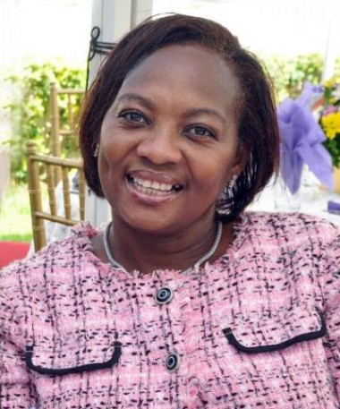

Dr. Ameyo Stella Adadevoh
 The Woman who saved Africa
Here's a time line of Dr. Ameyo Stella Adadevoh
- 1956 : Born in Lagos, Nigeria
- 1961 - 1962 : She went to preschool at the Mainland Preparatory Primary School in Yaba
- 1964 - 1968 : She attended primary school at the Corona School, Yaba in Lagos, Nigeria
- 1974 : She attended Queen's School, Ibadan, finishing in 1974, Nigeria for her secondary school educatio
- 1981 : Dr. Adadevoh graduated from the University of Lagos College of Medicine with a Bachelor of Medicine/Bachelor of Surgery. She served her one-year mandatory housemanship at Lagos University Teaching Hospital
- 2012 : Dr. Adadevoh was the first to alert the Nigerian Ministry of Health when H1N1 spread to Nigeria
- 2014 : Dr. Adadevoh correctly diagnosed Liberian Patrick Sawyer as Nigeria’s first case of Ebola at First Consultant Hospital in Lagos, Nigeria in July 2014. Dr. Adadevoh kept Patrick Sawyer in the hospital despite his insistence that he had a bad case of Malaria. Sawyer wanted to attend a business conference in Calabar, Nigeria. Adadevoh led the team who oversaw the treatment of Patrick Sawyer a Liberian, the first patient diagnosed with Ebola in Nigeria. Dr. Adadevoh also kept Patrick Sawyer at the hospital despite receiving a request from a Liberian ambassador to release him from the hospital.
Dr. Adadevoh tried to create an isolation area, despite the lack of protective equipment, by creating a wooden barricade outside Patrick Sawyer's door. Her heroic effort saved the nation from widespread infection. As of these events, Nigerian Doctors were on strike, and that could have caused severe crises. The professionalism and thorough medical examination carried out by Dr. Ameyo Adadevoh was impeccable. Adadevoh also provided staff with relevant information about the virus, procured protective gear and quickly contacted relevant officials. As a result of her report, the Nigerian government declared a national public health emergency and the Nigerian Ministry of Health set up an Ebola Emergency Operations Center. WHO declared Nigeria to be Ebola-free on October 20, 2014.
- 2014 Dr Adadevoh succumbed to the Ebola Virus Disease whilst in quarantine and passed away on the 19 August 2014 in Lagos, Nigeria. Her body was decontaminated and cremated by the government in response to the containment of the spread of the Ebola Virus Disease.Her family obtained her ashes and held a private interment ceremony on 12 September 2014, in Lagos.
The Dr. Ameyo Adadevoh Health Trust (DRASA), a non-profit health organization was created in her honor. The film "93 Days" is dedicated to Ameyo and tells the story of the treatment of Patrick Sawyer by Adadevoh and other medical staff at First Consultant Medical Center. On October 27, 2018, she was honoured with a Google Doodle posthumously on her 62nd birthday
If you have time, you should read more about this incredible human being on her entry